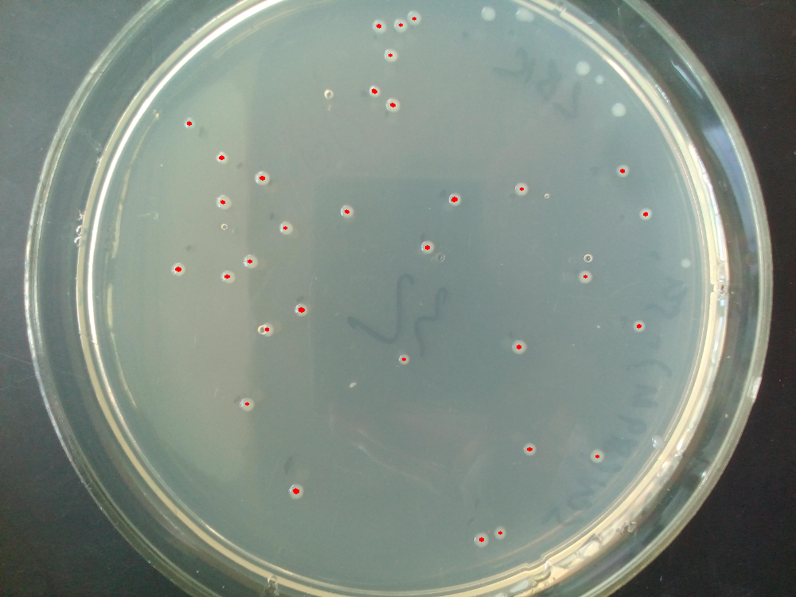
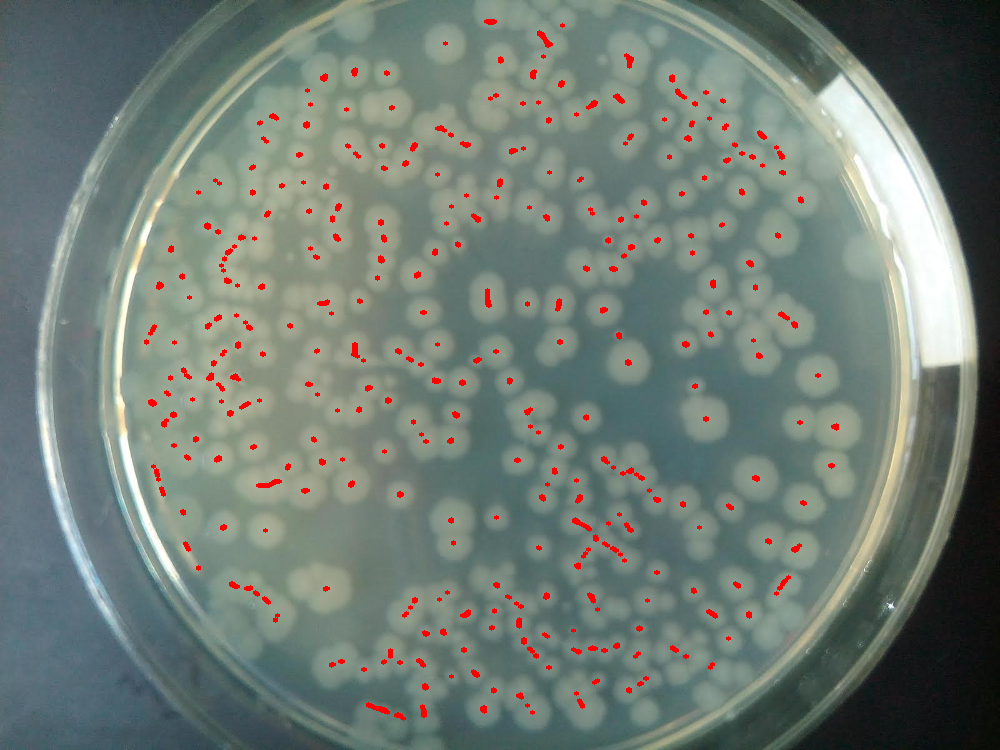

| Actual | Predicted | Accuracy | Final | Tophat | Threshold | Contours |
|---|---|---|---|---|---|---|
| 171 | 159 | 92.98245614035088 | ||||
| 186 | 222 | 80.64516129032258 | | |||
| 216 | 260 | 79.62962962962963 | ||||
| 258 | 265 | 97.28682170542636 | | |||
| 26 | 24 | 92.3076923076923 | | |||
| 260 | 291 | 88.07692307692308 | ||||
| 266 | 287 | 92.10526315789474 | ||||
| 32 | 32 | 100.0 |  | |||
| 330 | 319 | 96.66666666666667 | | |||
| 386 | 407 | 94.55958549222798 |  | |||
| 43 | 37 | 86.04651162790698 | ||||
| 56 | 57 | 98.21428571428571 | ||||
| 75 | 70 | 93.33333333333333 | | |||
| 87 | 100 | 85.05747126436782 | | |||